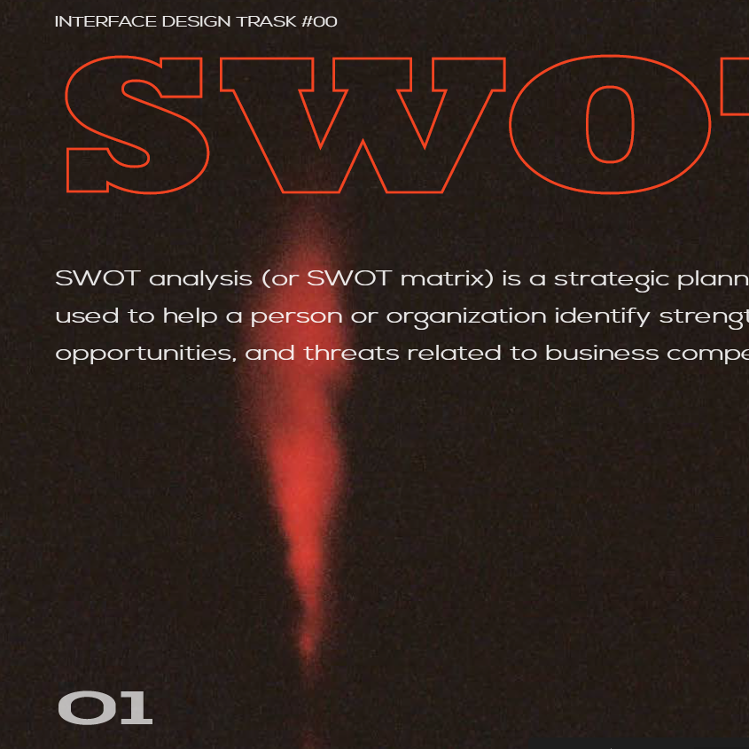
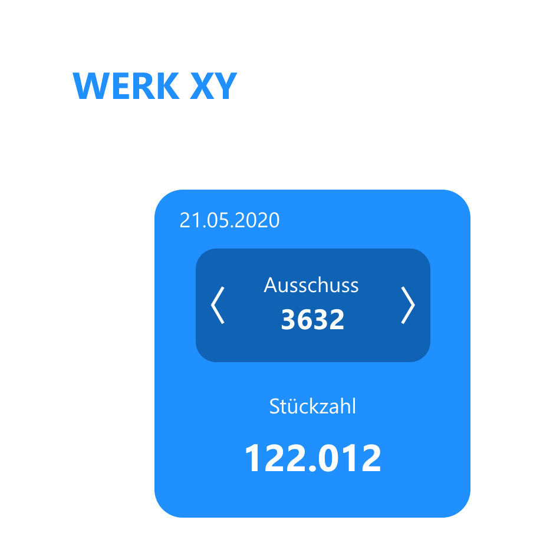
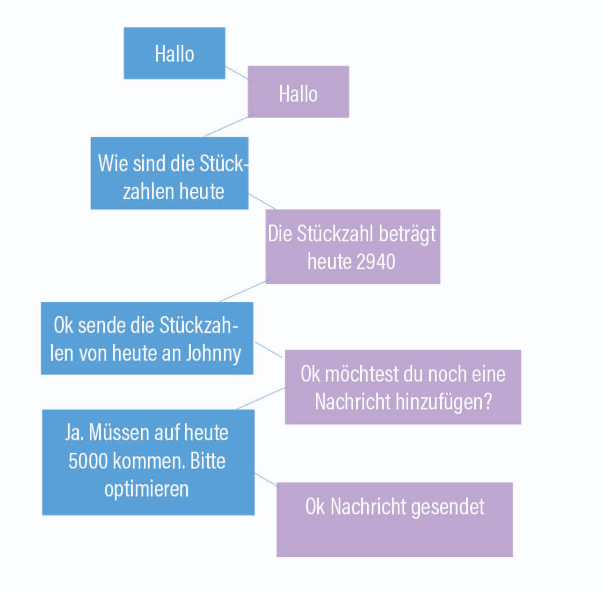
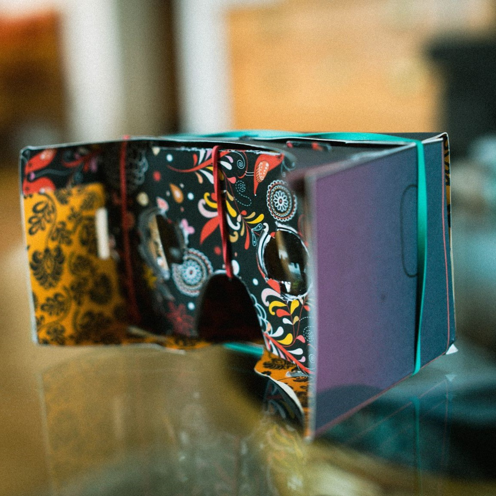
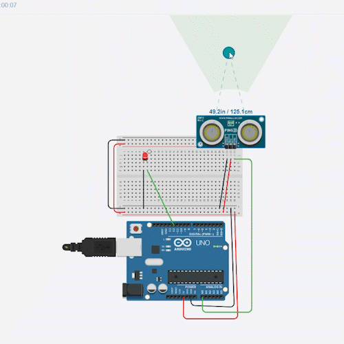
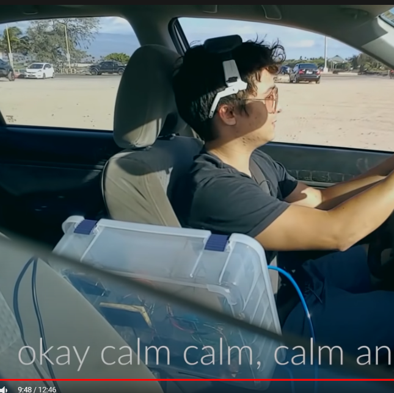

Interface Design SoSe2020
Aufgaben Protfolio Fabian Flaig


Task 1 - WALLET PROJECT
Entwicklung des perfekten Geldbeutels

Task 2 - PROTOTYPING
adobe xd

Task 3 - KLICKDUMMY
High-Fid Prototyp eines grafischen Interfaces

Task 4 - Voice user Interface
Konzeption und Low-Fi Prototyp eines Voice User Interfaces

Task 5 - High-Fid VUI
High-Fid Prototyp aus GUI & VUI

Task 6 - VR-Brille bauen
Basteln einer Google Cardboard VR-Brille

Task 7- Virtuellen Vorlesung
Low-Fi Prototyp einer virtuellen Vorlesung

Task 8 - Virtuelle Vorlesung 2
High-Fi Prototyp einer virtuellen Vorlesung

Task 10- Arduino Abstandmessung
Corona Abstandmessungssystem mit arduino
